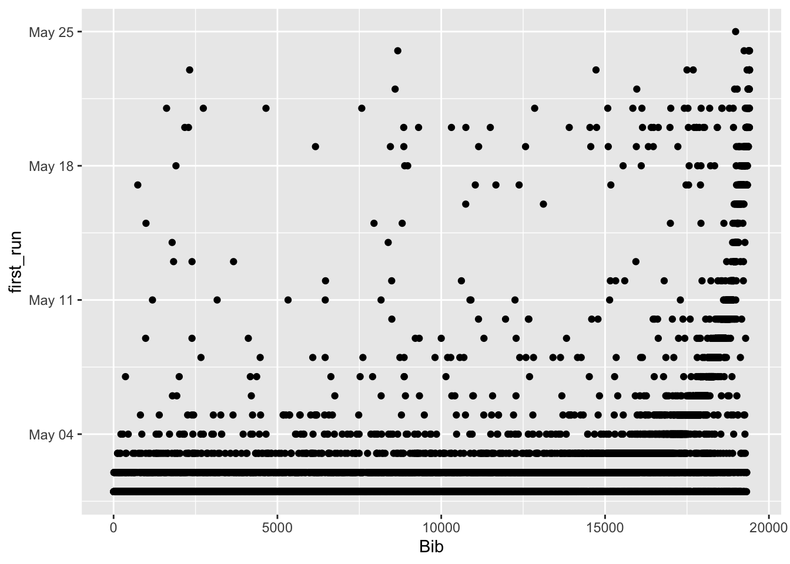
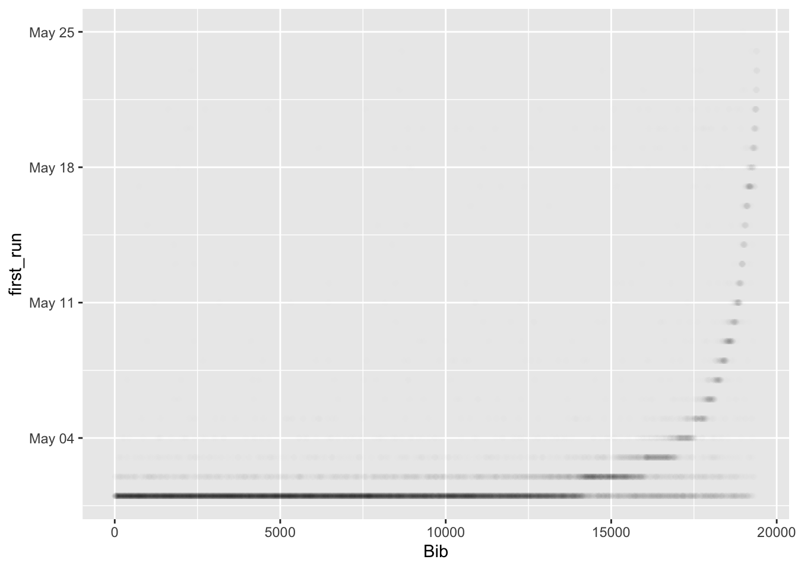
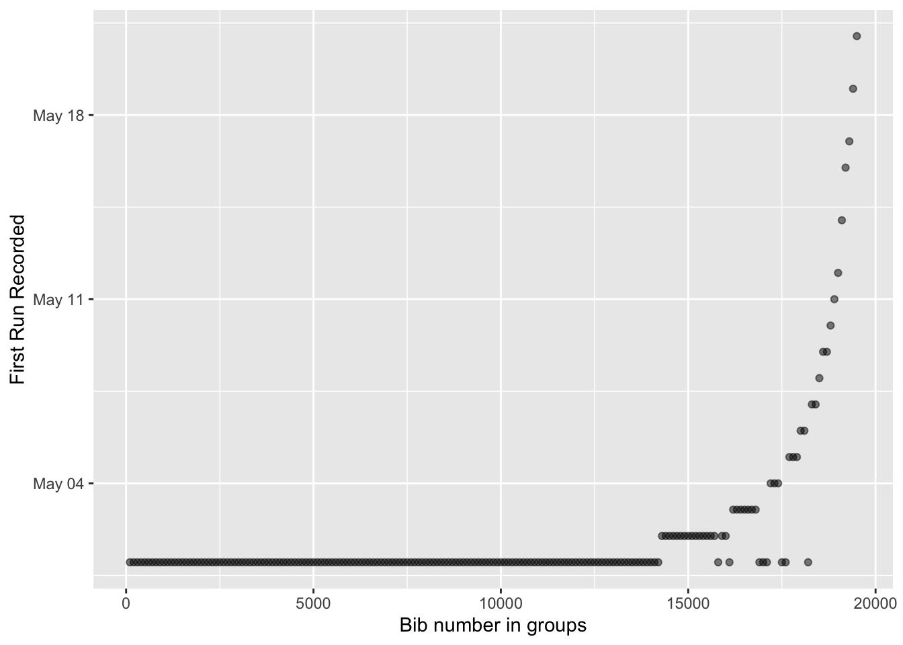
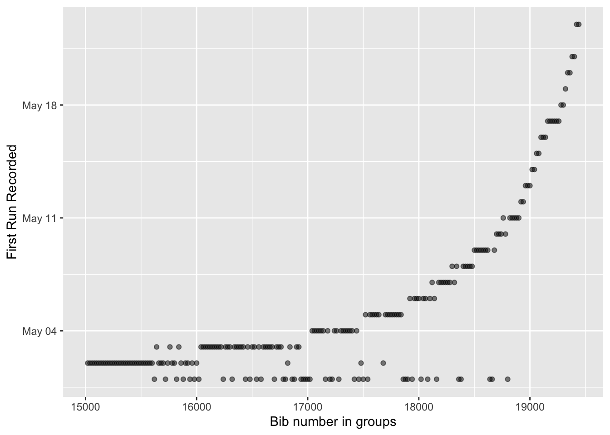

On the Facebook group for the Great Virtural Race across Tennessee, there was a post where people were complaining about recent entries (with correspondingly high bib numbers) logging miles all the way back to the start of the race. This is against the rules of the race in that you’re only supposed to start logging from the time you sign up. It’s not like I hadn’t thought of doing this myself, but since I was confident I would make it anyway, I didn’t take that step.
I thought I might be able to use R to figure out those who had erroneously entered miles from before they entered the race.
Data Loading and Cleaning
suppressPackageStartupMessages(library(tidyverse))
suppressPackageStartupMessages(library(lubridate))
suppressPackageStartupMessages(library(scales))gv <- read_csv("../datasets/gvrat_20200525.csv") # Active runners in GVRAT## Parsed with column specification:
## cols(
## .default = col_double(),
## Position = col_character(),
## `Participant's Name` = col_character(),
## Event = col_character(),
## Home = col_character(),
## G = col_character(),
## KM = col_number(),
## `Your Approximate Location` = col_character(),
## `Comp%` = col_character(),
## `Proj Fin` = col_character()
## )## See spec(...) for full column specifications.bv <- read_csv("../datasets/gvbat_20200525.csv") # Finshers who are going back## Parsed with column specification:
## cols(
## .default = col_double(),
## Position = col_character(),
## `Participant's Name` = col_character(),
## Event = col_character(),
## Home = col_character(),
## G = col_character(),
## `Your Approximate Location` = col_character(),
## `Comp%` = col_character(),
## `Proj Fin` = col_character()
## )
## See spec(...) for full column specifications.# I got rid of the doggies running in the doggy virtual race
gv <- gv %>% filter(Event == "GVRAT")
# Combine the finisher table and the active participant tables
gv <- bind_rows(gv, bv)
rm(bv)
# Make data into long form for dplyr use
gv_miles <- gv %>%
select(-c(Position, `Participant's Name`, `Your Approximate Location`,
`Comp%`, `Proj Fin`, KM, Home, G, A, Miles)) %>%
pivot_longer(contains("/"), names_to = "run_date", values_to = "miles_d") %>%
mutate(run_date = mdy(paste0(run_date, "/2020"))) %>%
mutate(Event = as.factor(Event))Cheater Search
The problem in this is that I don’t know when people signed up, so it’s not clear which people were not being honest. I know that I signed up on 5/13 and got assigned 18986. Others on my date got numbers in that range. I decided to graph first run date by bib number to see what would happen.
gv_miles %>%
group_by(Bib) %>%
filter(miles_d > 0) %>%
arrange(run_date) %>%
summarize(first_run = first(run_date)) %>%
ggplot(aes(x = Bib, y = first_run)) + geom_point()
The result is kind of a mess but you can see that there is a curve in there somewhere. To reduce the issue from so many data points, I reduced the opacity of each point.
gv_miles %>%
group_by(Bib) %>%
filter(miles_d > 0) %>%
arrange(run_date) %>%
summarize(first_run = first(run_date)) %>%
ggplot(aes(x = Bib, y = first_run)) + geom_point(alpha = 0.005)
Looking at it this way you can see more easily that there are groups of bibs corresponding to each date. For example, the group from bib 0 through about 14000 were May 1 or earlier signups. There is a much smaller group that signed up on May 2 from 14000-16000, another May 3 from 16000-17000, May 4 from 17000-17500, etc. My date of 5/13 is right around where it should be. Interestingly there is a dark dot corresponding to May 17. Maybe this is where the race organizers cut off the ability to back date through 5/1 or maybe there were a lot of people who signed up that day, it being a Sunday.
So the graph is kind of fuzzy, and I thought maybe what I could do is quantitatively determine where the cutoffs are between the days. One strategy might be to take windows of bib numbers (like 0-100) and see what date is the most common in that window.
fMode <- function(x, na.rm = FALSE) {
if(na.rm){
x = x[!is.na(x)]
}
ux <- unique(x)
return(ux[which.max(tabulate(match(x, ux)))])
}
groupwidth = 100
gv_miles %>%
group_by(Bib) %>%
filter(miles_d > 0) %>%
arrange(run_date) %>%
summarize(first_run = first(run_date)) %>%
arrange(Bib) %>%
mutate(bibgroup = cut_width(Bib, width = groupwidth)) %>%
group_by(bibgroup) %>%
summarize(modefirstrun = fMode(first_run)) %>%
ggplot(aes(x = as.numeric(bibgroup)*groupwidth, y = modefirstrun)) +
geom_point(alpha = 0.5) +
xlab("Bib number in groups") +
ylab("First Run Recorded")
That works pretty well for the first week or so. It’s a little hard to tell the difference between May 2 and May 3, May 3 and May 4, but as the days get further along, there’s more clear separation. At the every end, the bin width seems to be too big so let’s filter out the early days.
groupwidth <- 20
filterbib <- 15000
gv_miles %>%
filter(Bib > filterbib) %>%
group_by(Bib) %>%
filter(miles_d > 0) %>%
arrange(run_date) %>%
summarize(first_run = first(run_date)) %>%
arrange(Bib) %>%
mutate(bibgroup = cut_width(Bib, width = groupwidth)) %>%
group_by(bibgroup) %>%
summarize(modefirstrun = fMode(first_run)) %>%
ggplot(aes(x = as.numeric(bibgroup)*groupwidth + filterbib, y = modefirstrun)) +
geom_point(alpha = 0.5) +
xlab("Bib number in groups") +
ylab("First Run Recorded")
Based on this group width you can see there are still a lot of people who were cheating through May 11 and probably also beyond but, well, in the end who really cares. Like all races, unless you’re going to win your division or your age group, or overall, the race is really against yourself. If someone needs to backdate their miles to the beginning of May to make it to the finish, that just seems to mean they needed the miles, and even if they didn’t follow the rules, it really doesn’t affect me too much. Or does it?
Based on this type of graph we could estimate how many people backdated their runs. It sure seems like a considerable amount Maybe 10-20%? To determine this we would have to get a clear demarkation between dates for all 22 dates in this dataset, then compare each bib’s first run to where it should have been. It’s doable, but I’m kind of losing steam here! Ok, I’m going to make next post more about me than about the other people in the race…